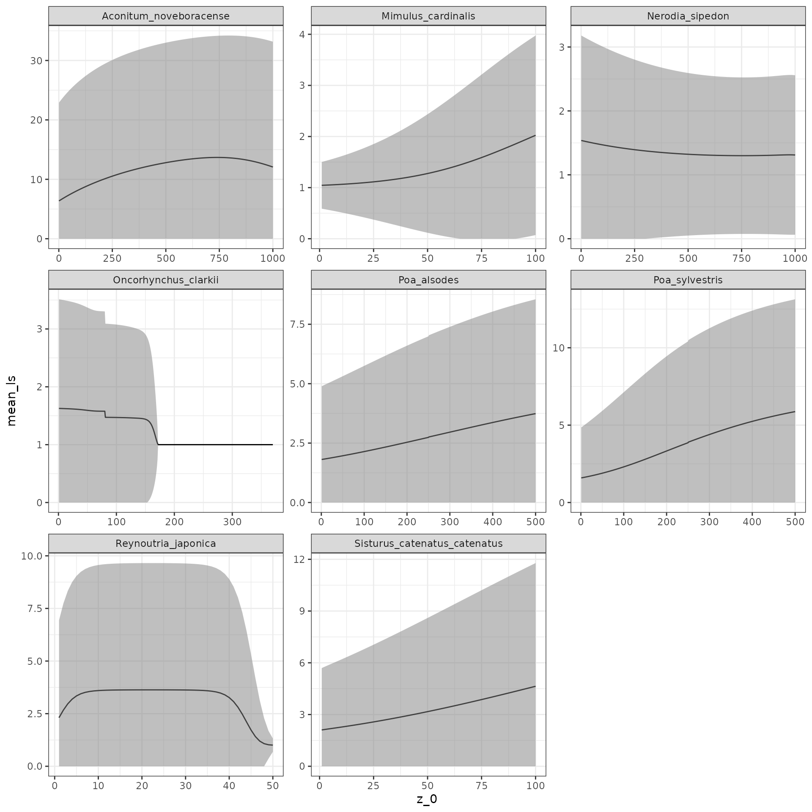
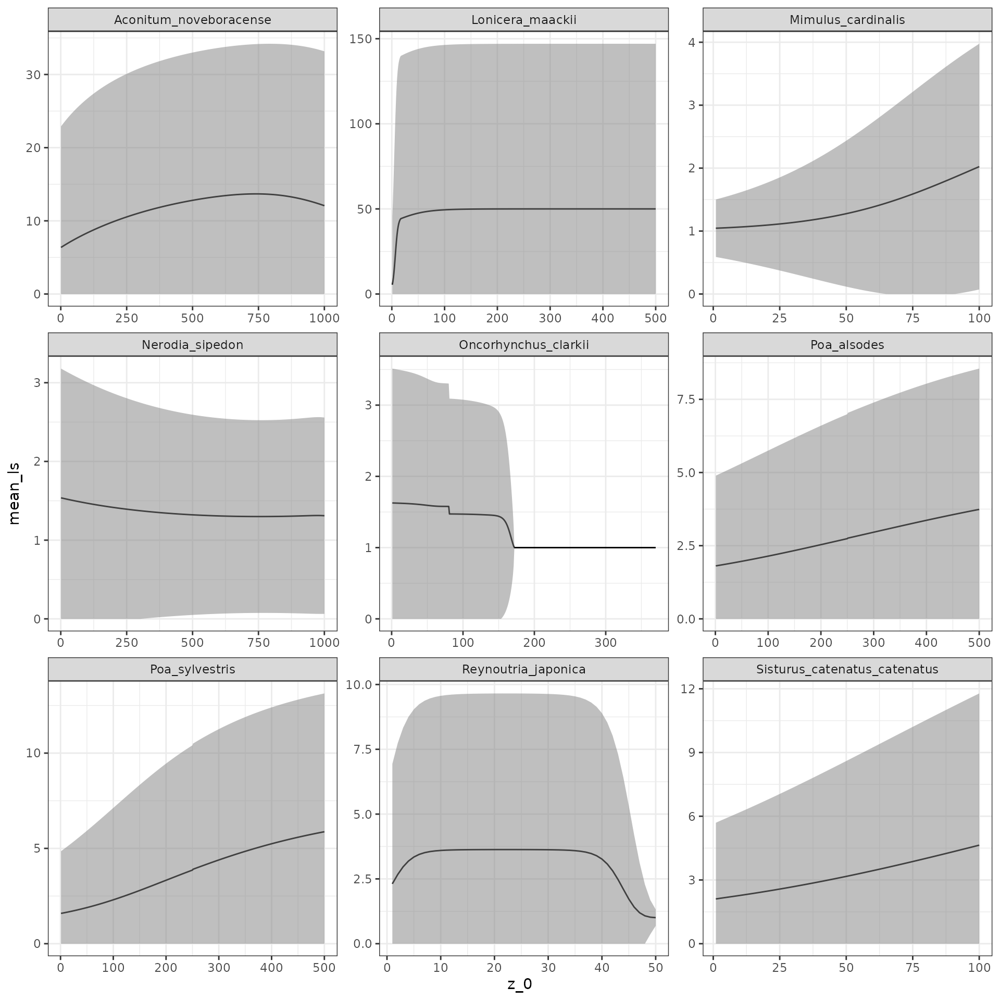

padrino-intro.RmdRPadrino provides an interface to the PADRINO database. PADRINO houses metadata on published Integral Projection Models, and all the information needed to rebuild them. RPadrino provides a set of functions that wrap around ipmr so that you can rebuild these models using R. Additionally, there’s some data downloading and management functionality, as well as tools to help report and cite studies used in an analysis.
Below are some very brief examples of how to select data based on the Metadata table, rebuild those models, and conduct an analysis. The first step for any of this is to access PADRINO. For first time users, this will always mean downloading it. For returning users, you may save and re-load PADRINO, but this example will not make use of the saving/loading functionality provided in pdb_load() and pdb_save().
library(RPadrino)
pdb <- pdb_download(save = FALSE)We’ve now downloaded the PADRINO database. It consists of 10 tables, all linked by ipm_id.
We can get a brief overview of the information using the print method:
pdb## A 'pdb' object with 56 unique species, 40 publications, and 280 models.
## Please cite all publications used in an analysis! These can be accessed with
## 'pdb_citations()'.
##
## The following models have continuously varying environments:
## aaaa15, aaaa16, aaaa21, aaaa54, aaaa59
## These can take longer to re-build - adjust your expectations accordingly!We see that some of the IPMs have continuously varying environments - we don’t want to use those for now because they take a while to run. We can use the pdb_subset() function to get only deterministic models. Because of the way PADRINO is structured, pdb_subset() only accepts a set of ipm_id’s that we want to keep (as opposed to other subset functions, which may accept some arbitrary logic). Thus, we need to create an index of those, which we can pass to pdb_subset() like so:
sub_ind <- setdiff(pdb$Metadata$ipm_id,
c("aaaa15", "aaaa16", "aaaa21", "aaaa54", "aaaa59"))
det_pdb <- pdb_subset(pdb, ipm_ids = sub_ind)Great! Say we want to find all the Asteraceae in PADRINO. We can first check and see which ipm_ids correspond to those by querying the tax_family column of pdb$Metadata.
aster_ind <- det_pdb$Metadata$ipm_id[det_pdb$Metadata$tax_family == "Asteraceae"]
aster_pdb <- pdb_subset(pdb, ipm_ids = aster_ind)Next, we can rebuild their IPMs. This is a two step process in RPadrino. The first is to create proto_ipms with pdb_make_proto_ipm(). This function takes a database object and, optionally, a subset of ipm_ids, and constructs a list of proto_ipms. proto_ipms are a common data structure used to represent IPM objects before they are actually constructed. One advantage of this extra step is that you can combine proto_ipms generated from your own data with ipmr with proto_ipms generated from PADRINO, so you can augment syntheses with your own data. An example of that is provided in the Other Data Sources vignette.
The simplest way to make proto_ipms for a whole pdb object is:
proto_list <- pdb_make_proto_ipm(aster_pdb)## 'ipm_id' aaa326 has the following notes that require your attention:
## aaa326: 'Demographic data from Metcalf Funct Ecol 2006'## 'ipm_id' aaa329 has the following notes that require your attention:
## aaa329: 'Based on IPM from Rose Ecology 2005; The GPS coordinates were approximated
## to the closest geographic location described in the reference'We see that there are some notes that require our attention. The first tells us that this IPM is using data from another publication. The second warns us that GPS coordinates aren’t exact, so we should be cautious if we wanted to merge the outputs from this analysis with other spatially referenced datasets (e.g. gridded climate data). We can inspect the IPM structure by printing each proto_ipm object:
proto_list ## This list of 'proto_ipm's contains the following species:
## Cirsium arvense
## Cirsium canescens
##
## You can inspect each model by printing it individually.Next, we can reconstruct the IPMs using pdb_make_ipm(). There are a variety of different options we can specify here, and we’ll get into how that works in the next example.
cirsiums <- pdb_make_ipm(proto_list)
lambdas <- lambda(cirsiums)
cirsiums## $aaa326
## A simple, density independent, deterministic IPM with 2 sub-kernel(s) defined.
## Deterministic lambda = 1
## $aaa329
## A simple, density dependent, deterministic IPM with 1 sub-kernel(s) defined.
## Lambda for the final time step of the model is: 1.146
## Call lambda(x, type_lambda = "all") for deterministic lambdas
## from each iteration.
## attr(,"class")
## [1] "pdb_ipm" "list"We’ve rebuilt our first set of IPMs! Next, we’ll explore how to extract a bit more information from these.
Often times, we’ll want more than just the deterministic population growth rates. We’ll explore how to run some more complicated analyses here. Specifically, we’ll compute the probability of surviving to age \(a\), \(l_a(z_0)\) and the average per-capita fecundity at age \(a\), \(f_a(z_0)\). After that, we’ll compute mean and variance in lifespan (\(\bar\eta(z_0)\) and \(\sigma_\eta^2 (z_0)\), respectively). Along the way, we’ll learn more about the structure of IPM objects in RPadrino and ipmr.
We’re going to use a subset of PADRINO IPMs to illustrate how to implement these calculations. We’ll select simple IPMs that are density-independent, deterministic, and from North America, so that things run a bit faster.
# This creates a table of the number of state variables per ipm_id. Since
# simple IPMs, by defintion, have only 1 state variable, we can use the names
# of the vector that it returns to choose only those.
n_state_vars <- table(pdb$StateVariables$ipm_id)
simple_mod_ind <- names(n_state_vars)[n_state_vars == 1]
# Next, we want to capture any models that have stochastic dynamics, multiple
# values per parameter, or density dependence.
rm_mod_ind <- unique(c(pdb$EnvironmentalVariables$ipm_id, # Stochastic models
pdb$ParSetIndices$ipm_id, # Multiple parameter values
pdb$Metadata$ipm_id[pdb$Metadata$has_dd], # Density dependent
pdb$Metadata$ipm_id[pdb$Metadata$continent != "n_america"]))
# Remove these IDs from our simple_mod_ind vector
simple_mod_ind <- simple_mod_ind[!simple_mod_ind %in% rm_mod_ind]
# We're also going to remove monocarpic perennials, as their survival/growth
# kernels are slightly trickier to work with (note that there is an example
# of working with these in the manuscript/si/case_study_1.pdf file in PADRINO
# GitHub repository).
monocarps <- pdb$Metadata$ipm_id[pdb$Metadata$organism_type == "biennial"]
simple_mod_ind <- simple_mod_ind[!simple_mod_ind %in% monocarps]
# Finally, we'll subset the database and build the IPM objects!
simple_pdb <- pdb_subset(pdb, simple_mod_ind) %>%
pdb_make_proto_ipm() %>%
pdb_make_ipm()## 'ipm_id' aaa310 has the following notes that require your attention:
## aaa310: 'Geo and time info retrieved from COMPADRE (v.X.X.X.4)'## 'ipm_id' aaa385 has the following notes that require your attention:
## aaa385: 'Same data as AAA385. State variable Height (Cm)'## 'ipm_id' aaa388 has the following notes that require your attention:
## aaa388: 'Same data as AAA388. State variable Height (Cm)'## 'ipm_id' dddd30 has the following notes that require your attention:
## dddd30: 'Frankenstein IPM'## 'ipm_id' dddd31 has the following notes that require your attention:
## dddd31: 'Frankenstein IPM'## 'ipm_id' dddd32 has the following notes that require your attention:
## dddd32: 'Frankenstein IPM'We now have 28 distinct ipm_ids to work with!
Age-specific calculations are straightforward once we’ve extracted sub-kernels. We can define functions that accept a single IPM object and then lapply() them to do our computations. We’ll start with \(l_a(z_0)\) and \(f_a(z_0)\). These are defined by the following equations:
\(l_a(z_0) = eP^a\), and
\(f_a(z_0) = (eFP^a)/l_a\).
\(P\) and \(F\) are survival/growth and fecundity kernels, respectively. \(e\) is a constant function \(e(z) \equiv 1\). Left multiplication with this function has the effect of summing columns. \(a\) is the age we wish to do the calculations for.
l_a <- function(ipm, a) {
P <- ipm$sub_kernels$P
# %^% is a function from ipmr that raises matrices to a power, rather than
# a pointwise power that ^ does.
P_a <- P %^% a
colSums(P_a)
}
f_a <- function(ipm, a) {
P <- ipm$sub_kernels$P
F <- ipm$sub_kernels$F
l_age <- l_a(ipm, a)
P_a <- P %^% a
colSums(F %*% P_a) / l_age
}Now, we just need to apply our functions to the IPMs. We’ll compute survival and fecundities for 5 year olds, and then plot the results:
l_as <- lapply(simple_pdb,
function(x, a) l_a(x, a),
a = 5)
f_as <- lapply(simple_pdb,
function(x, a) f_a(x, a),
a = 5)
# This only plots the figures for the first two species.
# Remove the [1:2] to see all of them.
# Uncomment the par(mfrow = c(...)) line to get an arrangement you like
# par(mfrow = c(2, 2))
for(i in seq_along(l_as)[1:2]) {
nm <- pdb$Metadata$species_accepted[pdb$Metadata$ipm_id == names(l_as)[i]]
plot(l_as[[i]], type = "l",
# ylim = c(0, 1),
main = paste0(nm,": Probability of survival to age 5"),
xlab = expression(paste("Initial size z"[0])),
ylab = "Pr(s)")
plot(f_as[[i]], type = "l",
# ylim = c(0, 1),
main = paste0(nm,": Expected Fecundity at age 5 (given survival)"),
xlab = expression(paste("Initial size z"[0])),
ylab = "E[f]")
}We can also generate survivorship curves for each one to investigate type I/II/III species. These require simulating cohorts for a number of years using the \(P\) and \(F\) kernels. Because this can take some time to run, we’ll only do it for a single model for each species in our data set.
keep_ind <- pdb_subset(pdb, simple_mod_ind) %>%
.$Metadata %>%
.[!duplicated(.$species_accepted), "ipm_id"]
use_ipms <- simple_pdb[keep_ind]
n_yrs <- 10
init_pops <- right_ev(use_ipms)## 'x' did not converge to asymptotic dynamics after 51 iterations.
## Will re-iterate the model 100 times and check for convergence.## model is now converged :)## 'x' did not converge to asymptotic dynamics after 51 iterations.
## Will re-iterate the model 100 times and check for convergence.## model is now converged :)## 'x' did not converge to asymptotic dynamics after 51 iterations.
## Will re-iterate the model 100 times and check for convergence.## model is now converged :)## 'x' did not converge to asymptotic dynamics after 51 iterations.
## Will re-iterate the model 100 times and check for convergence.## model is now converged :)## 'x' did not converge to asymptotic dynamics after 51 iterations.
## Will re-iterate the model 100 times and check for convergence.## model is now converged :)
# As above, remove the [1:2] to see all plots and use par() to control their
# arrangement
# par(mfrow = c(3, 2))
for(i in seq_along(init_pops)[1:2]) {
f_age <- l_age <- numeric(n_yrs)
P_a <- diag(nrow(use_ipms[[i]]$sub_kernels[[1]]))
for(j in seq_len(n_yrs)) {
P_now <- use_ipms[[i]]$sub_kernels$P
F_now <- use_ipms[[i]]$sub_kernels$F
l_age[j] <- sum(colSums(P_a) * init_pops[[i]][[1]])
f_age[j] <- sum(colSums(F_now %*% P_a) * init_pops[[i]][[1]])
P_a <- P_now %*% P_a
}
f_age <- f_age / l_age
nm <- pdb$Metadata$species_accepted[pdb$Metadata$ipm_id == names(init_pops)[i]]
plot(l_age, type = "l",
ylim = c(0, 1),
main = paste0(nm, ": Probability of survival"),
xlab = "Age",
ylab = "Pr(s)")
plot(f_age, type = "l",
# ylim = c(0, 1),
main = paste0(nm, ": Average Fecundity"),
xlab = "Age",
ylab = "E[f]")
}\(\bar\eta(z_0)\) is given by the following equation: \(\bar\eta(z_0) = eN\), where \(N\) is the fundamental operator. This can be thought of as the expected amount of time an individual with initial state \(z_0\) spends in state \(z'\) before death. It is computed as \((I - P)^{-1}\), where \(I\) is an identity operator (in practice, it is an identity matrix with dimension equal to \(P\)), and \(P\) is the survival/growth kernel of the IPM. Thus, all we need are the \(P\) kernels from each model.
make_N <- function(ipm) {
P <- ipm$sub_kernel$P
I <- diag(nrow(P))
N <- solve(I - P)
return(N)
}
eta_bar_z0 <- function(ipm) {
N <- make_N(ipm)
return(colSums(N))
}
mean_lifespan <- lapply(use_ipms, eta_bar_z0) The formula for the variance in lifespan is only a bit more complicated. It is given by \(\sigma_\eta^2(z_0) = e(2N^2 - N) - (eN)^2\). For this, we also need to use ipmr’s %^% operator to ensure we correctly exponentiate the first term, and use the regular ^ to exponentiate the second term. Calculating \(N\) is the same as before, we’ll compute the variance and standard deviation of lifespan (for plotting).
sigma_eta_z0 <- function(ipm) {
N <- make_N(ipm)
out <- colSums(2 * N %^% 2 - N) - (colSums(N)) ^ 2
return(out)
}
var_lifespan <- lapply(use_ipms, sigma_eta_z0)
sd_lifespan <- lapply(var_lifespan, sqrt)Warning? Huh? Let’s see what’s going on.
## aaaa34 aaaa36 aaa310 aaa341 aaa351 aaa385 ddddd5 dddd10
## [1,] 1.810595 1.590430 6.36749 -348825.70 1.045242 1.005169 2.106308 1.000000
## [2,] 3.739900 5.874642 13.68391 -30555.21 2.023906 3.631503 4.638129 1.626605
## dddd30
## [1,] 1.299821
## [2,] 1.537262## aaaa34 aaaa36 aaa310 aaa341 aaa351 aaa385 ddddd5
## [1,] 2.475952 2.774118 71.19712 20383705217 0.05439601 0.02589388 3.35095
## [2,] 6.023528 13.706128 115.84883 121676736576 0.99166204 9.44496008 13.28191
## dddd10 dddd30
## [1,] 0.0000000 0.3902612
## [2,] 0.9258931 0.7019200The fundamental operator should not have any negative numbers, and yet aaa341 contains them. This is because of the survival function used in the model. We’ll show how to remedy this in the next section, but for now, we’ll just remove it from our analysis. Next, we’ll learn how to visualize our results quickly with ggplot2:
mean_lifespan <- mean_lifespan[!names(mean_lifespan) %in% "aaa341"]
sd_lifespan <- sd_lifespan[!names(sd_lifespan) %in% "aaa341"]
library(ggplot2)## Warning: package 'ggplot2' was built under R version 4.1.1
all_data <- data.frame(
id = NA,
species = NA,
mean_ls = NA,
upper = NA,
lower = NA,
z_0 = NA
)
for(i in seq_along(mean_lifespan)) {
temp <- data.frame(
id = names(mean_lifespan)[i],
species = pdb$Metadata$species_accepted[pdb$Metadata$ipm_id == names(mean_lifespan)[i]],
mean_ls = mean_lifespan[[i]],
upper = mean_lifespan[[i]] + 1.96 * sd_lifespan[[i]],
lower = mean_lifespan[[i]] - 1.96 * sd_lifespan[[i]],
z_0 = seq(1, length(mean_lifespan[[i]]), 1)
)
all_data <- rbind(all_data, temp)
}
# Remove the NA dummy row, and restrict the lower CI to >= 0 (can't have negative
# lifespan)
all_data <- all_data[-1, ]
all_data$lower <- ifelse(all_data$lower < 0, 0, all_data$lower)
# Now, ggplot using facet wrap and geom_ribbon to get the confidence interval
ggplot(all_data, aes(x = z_0, y = mean_ls)) +
geom_line() +
geom_ribbon(aes(ymin = lower,
ymax = upper),
fill = "grey50",
alpha = 0.5) +
facet_wrap( ~ species,
scales = "free") +
theme_bw()
We saw above that sometimes data in PADRINO can give values that make no sense. PADRINO is committed to providing IPMs as they are published, and does not take a stance on the technical correctness of these models. The analysis above provides an opportunity to quickly illustrate how to address some of these issues. There is a separate vignette with a more complete overview of known issues in PADRINO.
We’ll introduce two new functions - vital_rate_exprs<- and pdb_new_fun_form(). Since we’re computing all new survival values, we’ll have to modify the proto_ipm first, then re-build the IPM object (the species in question is Lonicera maackii).
lonicera_proto <- pdb_make_proto_ipm(pdb, "aaa341")
# Inspect the vital rate expressions
vital_rate_exprs(lonicera_proto)## $aaa341
## s: 1/(1 + exp(-(si + ss1 * size_1 + ss2 * size_1^2)))
## g_mean: gi + gs * size_1
## g: stats::dnorm(size_2, g_mean, g_sd)
## Fp: 1/(1 + exp(-(fpi + fps * size_1)))
## Fs: exp(fi + fs * size_1)
## Fd: stats::dnorm(size_2, fd_mean, fd_sd)We can see that the function s is the one we want to update. We’ll use the setter vital_rate_exprs<- and pdb_new_fun_form() to do this. These two functions combine with the following syntax:
vital_rate_exprs(proto_ipms) <- pdb_new_fun_form(
list(
<ipm_id_1> = list(
<vital_rate_name_1> = <expression_1>
<vital_rate_name_2> = <expression_2>
),
<ipm_id_2> = list(
<vital_rate_name_3> = <expression_3>
)
)
)With a maximum survival probability of 0.98, our example of aaa341 looks like this:
vital_rate_exprs(lonicera_proto) <-pdb_new_fun_form(
list(
aaa341 = list(
s = pmin(0.98, 1 / (1 + exp(-(si + ss1 * size_1 + ss2 * size_1 ^ 2))))
)
)
)
vital_rate_exprs(lonicera_proto)## $aaa341
## s: pmin(0.98, 1/(1 + exp(-(si + ss1 * size_1 + ss2 * size_1^2))))
## g_mean: gi + gs * size_1
## g: stats::dnorm(size_2, g_mean, g_sd)
## Fp: 1/(1 + exp(-(fpi + fps * size_1)))
## Fs: exp(fi + fs * size_1)
## Fd: stats::dnorm(size_2, fd_mean, fd_sd)Great! Let’s re-run the analysis above with our corrected model!
# Rebuild the IPM, then use our functions for mean, variance, and SD on it.
lonicera_ipm <- pdb_make_ipm(lonicera_proto)
lonicera_mu_ls <- eta_bar_z0(lonicera_ipm$aaa341)
lonicera_var_ls <- sigma_eta_z0(lonicera_ipm$aaa341)
lonicera_sd_ls <- sqrt(lonicera_var_ls)
temp <- data.frame(
id = "aaa341",
species = "Lonicera_maackii",
mean_ls = lonicera_mu_ls,
upper = lonicera_mu_ls + 1.96 * lonicera_sd_ls,
lower = lonicera_mu_ls - 1.96 * lonicera_sd_ls,
z_0 = seq(1, length(lonicera_mu_ls), 1)
)
all_data <- rbind(all_data, temp)
# Again, restrict the lower CI to have minimum of 0
all_data$lower <- ifelse(all_data$lower < 0, 0, all_data$lower)
# Rebuild our plot!
ggplot(all_data, aes(x = z_0, y = mean_ls)) +
geom_line() +
geom_ribbon(aes(ymin = lower,
ymax = upper),
fill = "grey50",
alpha = 0.5) +
facet_wrap( ~ species,
scales = "free") +
theme_bw()
The results look a bit better for Lonicera, and are at least now mathematically correct. When updating functional forms in PADRINO, it is important to explore how assumptions like the maximum survival probability in the modified form affect results. This is left as an exercise to you!
This is just a very brief overview of the analyses that are possible with RPadrino. Ellner, Childs & Rees 2016 give a comprehensive overview of IPM theory and analyses. There are further vignettes in this package that describe data cleaning and how to use PADRINO with other databases.